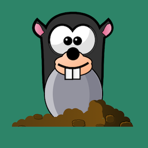

Work Samples
by Emily Aquin

Memory Game
Recreating the classic game of Memory (also known as Concentration). Built with JavaScript

Whack-A-Mole
See how many moles you can whack in ten seconds! Built with JavaScript

Clock
A clock built with CSS and JavaScript
We Rate Dogs Twitter Analysis
The Tweets from We Rate Dogs are analyzed using Python, NumPy, Seaborn and MatPlotLib

Bikeshare Analysis
A detailed analysis in Jupyter Notebooks of the customer base using a bikeshare system. The notebook demonstrates manipulating and preparing data for analysis, and creating visualizations.

Trends in Income, Body Mass and Calorie Consumption
An analysis of data from www.gapminder.org. Using Python, Pandas, MatPlotLib and Seaborn